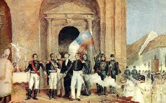
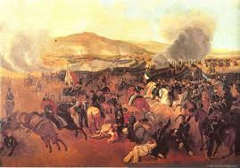
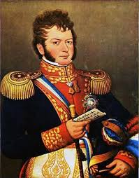

La Independencia de Chile comenzó en 1810, en un contexto de crisis en la monarquía española debido a la invasión napoleónica. La Primera Junta Nacional de Gobierno, formada el 18 de septiembre de 1810, marcó el inicio del proceso independentista, aunque la independencia total se consolidó en 1818 tras la Batalla de Maipú.
El proceso incluyó hitos como la Batalla de Rancagua (1814), que marcó un revés para los patriotas, y la posterior reconquista liderada por el Ejército de los Andes. La declaración oficial de la independencia se firmó el 12 de febrero de 1818 en Talca.
Figuras como Bernardo O'Higgins, considerado el "Padre de la Patria", y José de San Martín, líder del Ejército de los Andes, fueron fundamentales. Otros personajes clave incluyen a Manuel Rodríguez, líder de la resistencia guerrillera.
